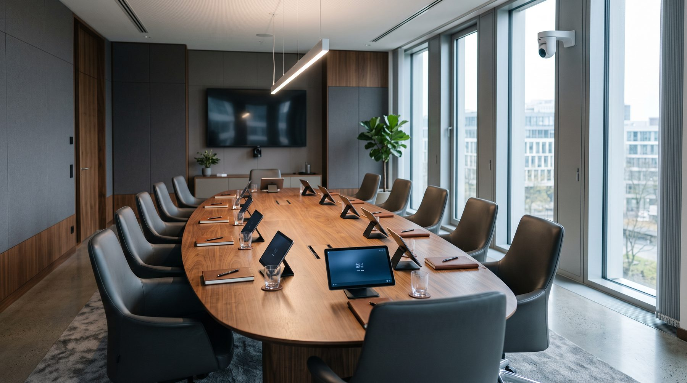

Sprechstelle, Kameranachführung, Abstimmung und Protokoll in einem System — betrieben auf Ihrer eigenen Hardware, im Saal, ohne Cloud-Zwang.

Wer heute eine Gremiensitzung ausstattet, kauft zwei Systeme, die nichts voneinander wissen. Die Naht dazwischen bleibt Handarbeit.
Stark bei Ton und Kamera. Kennt weder Beschluss noch Protokoll noch Sitzungsmappe.
Stark bei Unterlagen und Governance. Haben keinerlei Bezug zum Raum, zum Mikrofon, zur Kamera.
Kann Zuschaltung. Keine rechtssichere Abstimmung, kein Protokoll, keine Anwesenheit, kein Saalton.
Wir ersetzen weder Ihre Videokonferenz noch Ihr Ratsinformationssystem. Wir schließen die Naht dazwischen.
Der Sitzplatz trägt die Identität: Nummer, Funktion, Stimmrecht, Kamerapreset. Personen werden je Sitzung zugeordnet, Geräte sind austauschbar. Ein defektes Gerät wird ersetzt, ohne dass etwas neu eingerichtet wird.
Drei Sekunden Tonlücke sind verzeihlich, eine verlorene Stimme nicht. Die Stimme wird auf dem Gerät gesichert, bevor sie den Server erreicht — reißt die Verbindung, wird sie nachgereicht und genau einmal gezählt.
Kein Lizenzabruf im Netz, kein CDN, keine externe Schriftart. Fällt während der Sitzung das Internet aus, läuft alles weiter.
Jeder Kundenwunsch wird ein allgemeines Merkmal oder er wird abgelehnt. Anpassung über Konfiguration, nie über einen eigenen Codestand.
Während der Abstimmung zeigt das Gerät genau eine Frage und drei Antworten. Die Zählung bleibt bis zum Auszählen verborgen — ein Zwischenstand würde die noch Unentschiedenen beeinflussen. Bei geheimer Wahl existiert die Zuordnung Stimme zu Person nirgends, auch nicht im Protokoll.
Und reißt in diesem Moment die Verbindung, bleibt die Stimme auf dem Gerät gesichert, bis der Server ihren Empfang bestätigt hat.
Ehrlich gesagt, wo wir stehen: Kern, Kameranachführung, Redeliste, Abstimmung, Tagesordnung und Protokoll laufen. Ton, Regie und Transkript nicht.
Was jetzt hilft, ist kein weiteres Merkmal, sondern ein echter Raum. Wenn Sie ein Gremium haben, das regelmäßig tagt, und bereit sind, ein System im Schattenbetrieb mitlaufen zu lassen — ohne dass etwas davon abhängt — sprechen wir.